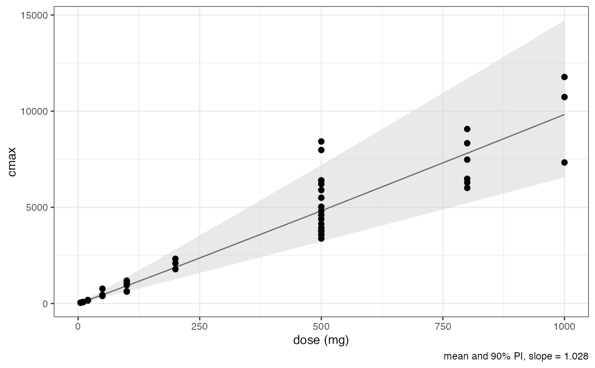
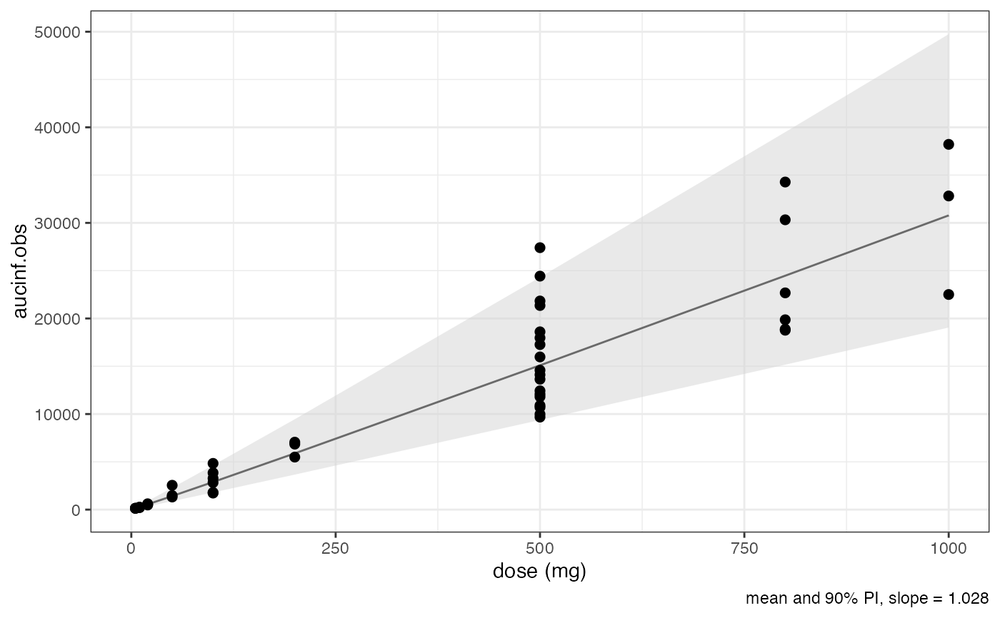
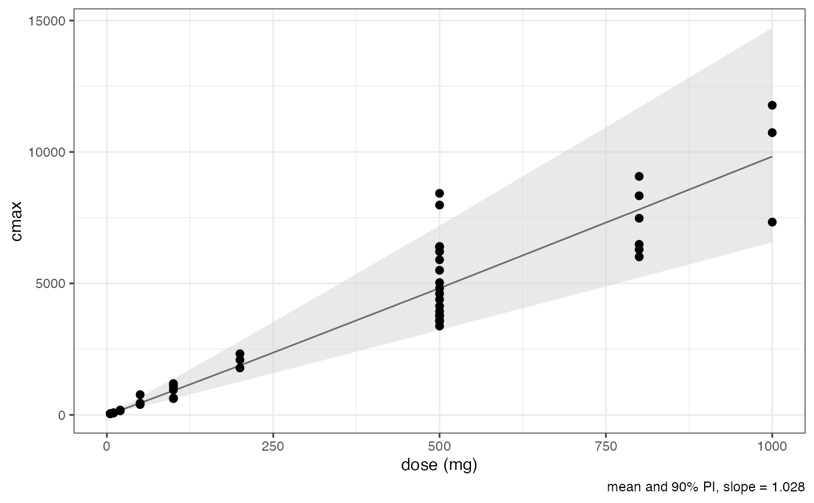
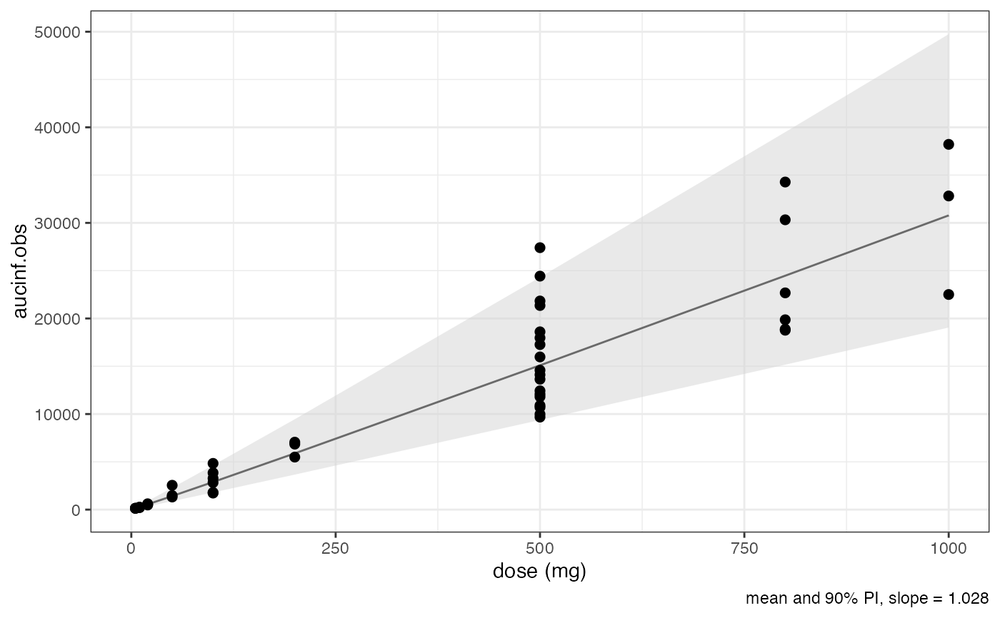

![[Experimental]](figures/lifecycle-experimental.svg)
Plot the PK parameter defined by parameter over DOSE and overlay with
a linear model of the log-transformed parameter and the log-transformed dose.
The slope is printed in the caption line.
All zero values for the selected parameter are filtered out before analysis.
Usage
nca_power_model(
nca,
parameter = NULL,
group = NULL,
title = NULL,
size = 2,
alpha = 1
)
Arguments
- nca
PK parameters as data frame.
- parameter
The PK parameter as character.
- group
Grouping parameter as character.
- title
The title as character.
- size
The point size as numeric.
- alpha
The alpha value for the data points as numeric.
Value
A list of ggplot2 objects.
Examples
nca_power_model(nca(examplinib_sad_nif, analyte = "RS2023"), "aucinf.obs")
#>
#> $aucinf.obs
 #>
nca_power_model(
nca(examplinib_sad_nif, analyte = "RS2023"),
c("cmax", "aucinf.obs")
)
#>
#> $cmax

#>
#> $aucinf.obs

#>
#>
nca_power_model(
nca(examplinib_sad_nif, analyte = "RS2023"),
c("cmax", "aucinf.obs")
)
#>
#> $cmax

#>
#> $aucinf.obs

#>